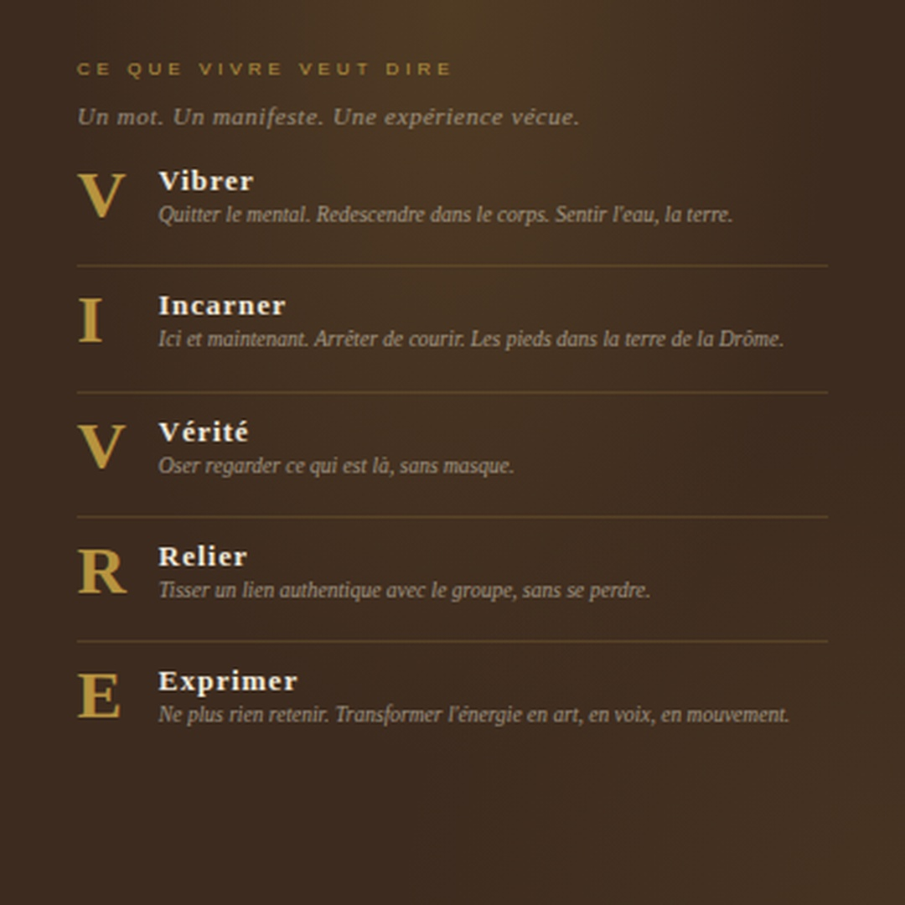
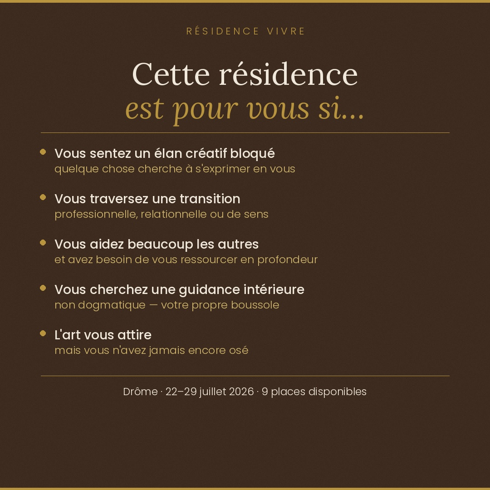
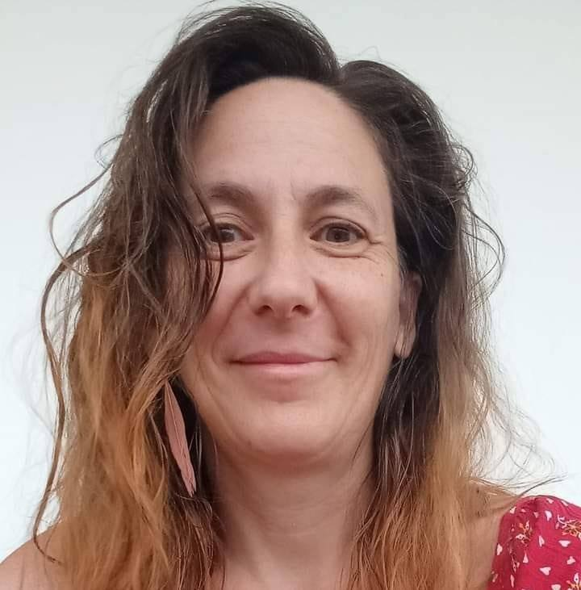
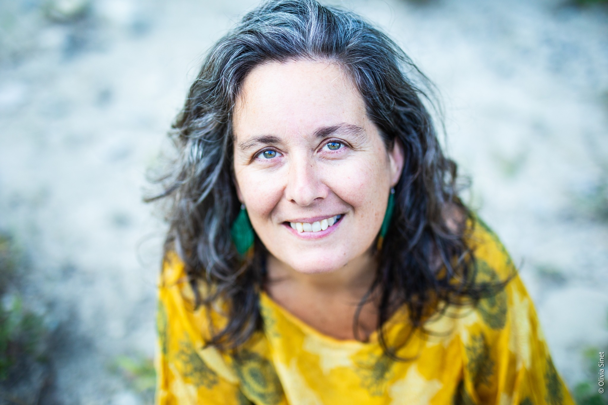

|
Emilie Treynet · Gestalt-thérapie & médiations artistiques
Résidence VIVRE
22 au 29 juillet 2026 · Drôme, France · 8 jours / 7 nuits · 10 personnes max
|
Bonjour,
Peut-être avez-vous entendu parler de la Résidence VIVRE ces dernières semaines. Peut-être avez-vous hésité.
Peut-être que quelque chose en vous résonne, sans que vous sachiez encore exactement quoi.
Cette newsletter est faite pour vous.
Elle rassemble tout ce que je voulais vous dire sur ce projet — pourquoi il existe, pour qui il est fait,
ce que vous y vivrez, et comment faire le pas si vous vous sentez concerné·e.
Prenez le temps de la lire. Elle le mérite.
|
|

|
|
Chaque lettre est une invitation. Pas un concept — une expérience vécue en 7 jours dans la Drôme.
|
|
Pourquoi cette résidence existe
|
Ces derniers mois, est-ce que tu as eu l'impression de courir sans vraiment vivre ?
On gère. On tient. On fait. Le mental tourne en boucle, le corps... on l'oublie. Rien qui se voit de l'extérieur —
pas de crise, pas d'effondrement spectaculaire. Juste cette fatigue qui ne passe pas avec le sommeil.
Ce bruit de fond qui ne s'arrête plus. Cette sensation sourde d'être à côté de soi-même, sans trop savoir depuis quand.
En Gestalt, on appelle ça une rupture du cycle du contact. L'énergie est là — elle a toujours été là.
Mais elle tourne en rond, elle ne circule plus. Elle ne trouve plus de sortie. Alors elle s'accumule, se fige,
ou disparaît dans l'agitation du quotidien.
C'est de ça qu'on veut parler. Et c'est pour ça qu'on a créé la Résidence VIVRE.
Depuis plusieurs années, Caroline Maisonneuve et moi accompagnons des femmes et des hommes dans ce chemin de retour à eux-mêmes —
moi en gestalt-thérapie et médiation artistique, Caroline en thérapie psycho-corporelle et gestalt. Nos approches se complètent.
Nos convictions se rejoignent.
Ce que nous observons, encore et encore : la transformation ne naît pas d'une seule séance.
Elle naît de la durée. Du temps qu'on s'accorde vraiment — pas le temps volé entre deux réunions, mais le temps plein,
celui où l'on peut enfin descendre sous la surface. Elle naît aussi du groupe — de ce moment étrange et précieux où l'on réalise
que l'on n'est pas seul·e à ressentir ce que l'on ressent.
La Résidence VIVRE est née de cette conviction : certaines choses ne peuvent se vivre qu'en immersion, entouré·e,
loin de tout ce qui nous distrait de nous-mêmes. Pour que l'énergie puisse enfin circuler à nouveau. Pour retrouver le mouvement.
|
|
Pour qui ?
|
Pas besoin d'être "en crise" pour venir. Pas besoin non plus d'avoir déjà fait une thérapie.
Ce qui compte, c'est ce que vous ressentez. Voici quelques portraits — peut-être vous reconnaîtrez-vous dans l'un d'eux.
Vous êtes créatif·ve, mais quelque chose s'est bloqué. L'élan était là, il y a peu. Ou peut-être y a-t-il longtemps. Vous sentez que vous avez quelque chose à exprimer, mais ça ne sort plus — ou ça n'est jamais vraiment sorti. Vous avez mis de côté cette part de vous, et elle vous manque.
Vous traversez une transition. Professionnelle, personnelle, relationnelle. Quelque chose se termine, ou doit se terminer, et vous ne savez pas encore ce qui vient après. Vous avez besoin d'espace pour y voir clair — pas de réponses toutes faites, mais un espace pour vous les trouver vous-même.
Vous aidez les autres, beaucoup. Peut-être trop. Vous êtes dans un métier relationnel, soignant·e, accompagnant·e, enseignant·e. Vous donnez énormément — et vous avez besoin de vous ressourcer en profondeur, pas juste de "décompresser". Quelque chose en vous a besoin d'être nourri, pas seulement reposé.
Vous travaillez sur vous — la confiance, les limites, le lâcher-prise. Vous connaissez le chemin, vous avancez. Mais vous sentez que vous avez besoin d'un espace plus intense, plus immersif, pour franchir quelque chose que les séances hebdomadaires n'arrivent pas à débloquer.
Vous cherchez une forme de guidance intérieure. Pas religieuse, pas dogmatique. Plutôt une reconnexion à ce qui est vrai en vous — à votre propre boussole intérieure, à ce que vous savez au fond, mais que le bruit du quotidien étouffe.
L'art vous attire, mais vous n'avez jamais osé. Vous vous dites que vous n'êtes pas "créatif·ve", que vous ne savez pas dessiner, chanter, jouer. Et pourtant quelque chose vous tire vers là. Ce n'est pas un hasard. L'art sera présent dans cette résidence — non pas pour produire, mais pour retrouver.
|
|

|
|
L'art comme porte d'entrée vers soi
|
C'est là que la Résidence VIVRE se distingue vraiment.
Je suis gestalt-thérapeute, et aussi médiatrice artistique. Et dans cette résidence, l'art ne sera pas un "atelier créatif"
glissé entre deux temps de parole. Il sera une voie thérapeutique à part entière — peut-être la plus directe qui soit.
Parce que la créativité, c'est VIVRE. C'est l'élan vital. C'est ce qui nous met en mouvement, ce qui nous relie à quelque chose
de plus grand que nos peurs et nos habitudes. Quand on retrouve cet élan — par le dessin, la voix, l'écriture, le mouvement,
le jeu théâtral, la danse — on ne retrouve pas juste "une activité". On retrouve une partie de soi-même qu'on avait mise de côté,
étouffée, oubliée.
L'art est une porte d'entrée vers notre être profond. Vers ce que nous sommes vraiment, tout au fond, sous les rôles, les injonctions,
les peurs du regard des autres.
Mais aller à cette rencontre-là peut bousculer. Cela remue. Cela déplace des choses. C'est précisément pour cette raison que la médiation artistique
ne se pratique pas seul·e devant une feuille blanche — mais dans un cadre thérapeutique solide, avec deux professionnelles formées, qui tiennent l'espace
pour que tout ce qui émerge puisse être accueilli en toute sécurité.
C'est ce que nous vous offrons : la liberté de vous laisser traverser par quelque chose, avec la certitude d'être tenu·e.
Aucune compétence artistique n'est requise. Aucun talent à prouver. Juste une curiosité, et l'envie de vous retrouver.
|
|
Une première édition. Un engagement entier.
|
C'est la toute première édition de la Résidence VIVRE. Et c'est précisément pour ça que nous y mettons tout.
Nous avons pensé chaque journée avec soin — chaque transition, chaque espace de silence comme de parole, chaque proposition artistique.
Nous avons choisi la Drôme pour sa lumière, sa nature, son invitation à ralentir. Nous avons choisi de rester 10 personnes maximum,
parce que nous savons — professionnellement et humainement — ce que permet un groupe de cette taille.
Une place a déjà été réservée. Il en reste 9.
|
|
Pourquoi s'engager maintenant
|
Ce n'est pas une question de marketing. C'est une question de réalité.
Un groupe de 10 personnes, ça se construit. Nous ne faisons pas que remplir des places — nous constituons un collectif humain.
Chaque personne qui rejoint la résidence fait partie de ce qui rendra l'expérience possible pour toutes les autres.
Plus le groupe se forme tôt, plus nous pouvons préparer une expérience qui vous ressemble vraiment, à vous toutes et tous.
Et puis il y a autre chose. Vous inscrire, c'est poser un acte envers vous-même. C'est décider — avant même d'arriver dans la Drôme —
que vous comptez. Que ce temps est légitime. Que vous méritez cet espace.
C'est souvent là que commence la transformation.
|
|
Les informations pratiques
|
Dates · 22 au 29 juillet 2026
Lieu · Drôme, France
Durée · 8 jours / 7 nuits
Groupe · 10 personnes · 1 place déjà réservée
Tarif · 1 390 €
Acompte · 400 €
Paiement · Échelonné possible
Animatrices · Emilie Treynet & Caroline Maisonneuve
|
|
|
Vous hésitez encore ? Parlons-en.
|
C'est normal. Une résidence de 8 jours, ça ne se décide pas à la légère. Il y a des questions pratiques, des doutes, des peurs peut-être.
Est-ce que c'est fait pour moi ? Est-ce que je suis prêt·e ? Est-ce que je serai à ma place ?
C'est exactement pour ça que nous vous proposons un appel découverte gratuit de 20 minutes.
Pas un argumentaire commercial. Un vrai moment d'échange — pour que vous puissiez poser vos questions, sentir l'énergie du projet,
et décider en toute clarté si la Résidence VIVRE est faite pour vous. Ou pas.
Ces 20 minutes sont aussi pour nous : chaque personne qui rejoint le groupe est une rencontre. Nous souhaitons qu'elle soit juste, des deux côtés.
|
|
|
|
Les animatrices
Emilie Treynet & Caroline Maisonneuve
|
|

|

|
|
À très bientôt, j'espère,
Emilie Treynet
Gestalt-thérapeute & médiatrice artistique
emilietreynetgestalt.com
Avec Caroline Maisonneuve, thérapeute psycho-corporelle et gestalt praticienne
|
|
Vous recevez cet email car vous êtes inscrit·e à la newsletter d’Emilie Treynet.
Tout part de toi · 4E chemin des Hermières · 69340 Francheville
Se désinscrire
|
|